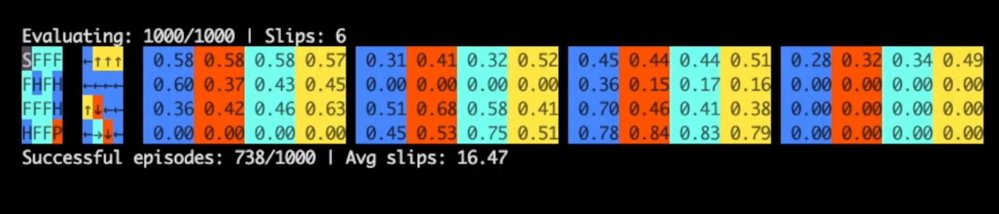

I trained a Q-Learning model on the OpenAI Gym Slippery Frozen Lake environment for 20,000 iterations, and evaluated for 1,000 iterations. The trained model had a success rate of about 73%. Action for the 3 column on the second row is especially interesting, it correctly learns that the best policy is to try move toward one of the holes because there is a 1/3 chance of slipping and slips are orthogonal to the desired direction.
 Training and Evaluation Video (youtube)